Маршрут — Тренувальна гонка VeloGO 03.10.2026 на Strava. Завантажте GPX-файл треку у велокомп'ютер і прочитайте цей опис.
Коротко про маршрут
- Дистанція: 83,2 км. Перші 9,6 км — нейтралізований рух без перегонів, гонка — 73,6 км.
- Набір висоти: 812 м тягунами по 0,5–1,3 км.
- Технічний старт: парковка біля Видубицького монастиря о 10:00.
- Старт гонки: після блокпосту на Дніпровському шосе, 9,6 км. Обов'язково дотримуйтесь правил дорожнього руху.
- Фініш: парк Феофанія у підйом. Останні 720 м з 41 м набору.
Як користуватись цим описом
Маршрут не кільцевий. Одні й ті самі перехрестя ви проїжджаєте двічі, у протилежних напрямках. У списку нижче кожен проїзд вказаний окремо, з власним кілометражем.
Позначення: ← ліворуч, → праворуч, ↻ розворот або коло, ↑ прямо (там, де легко помилитись і повернути).
0–9,6 км · Нейтралізація до блокпосту
Нейтралізована частина до блокпосту проходить спокійно, без перегонів. Запам'ятовувати не потрібно, бо колона рухається разом.
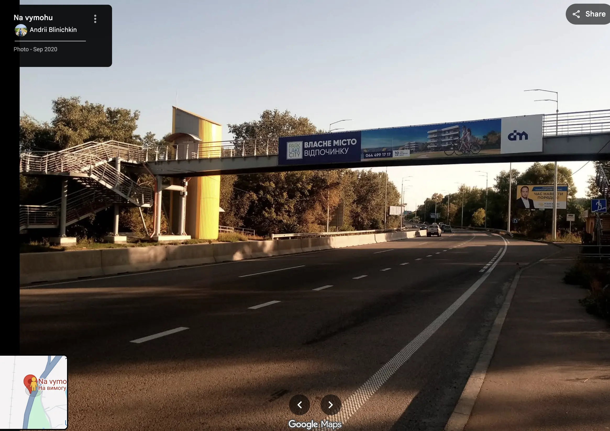
9,6–22,1 км · Лісники, Ходосівка, Кременище
Класичний маршрут до Космосу з Лісників через Ходосівку та Кременище. Рівнина з одним коротким підйомом у Кременище.
- 14,2→Лісники, на першому світлофорі праворуч.
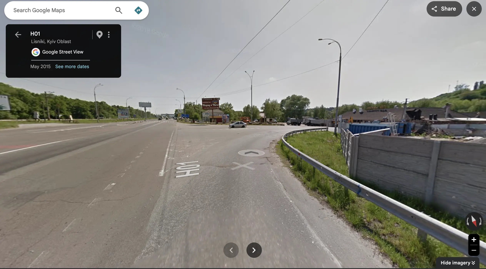
14,2 км: праворуч на стрілку, можна не чекати зелений. - 14,4←Відразу через 200 м ліворуч. Далі уважно запам'ятовуйте дорогу, нею будете повертати назад.
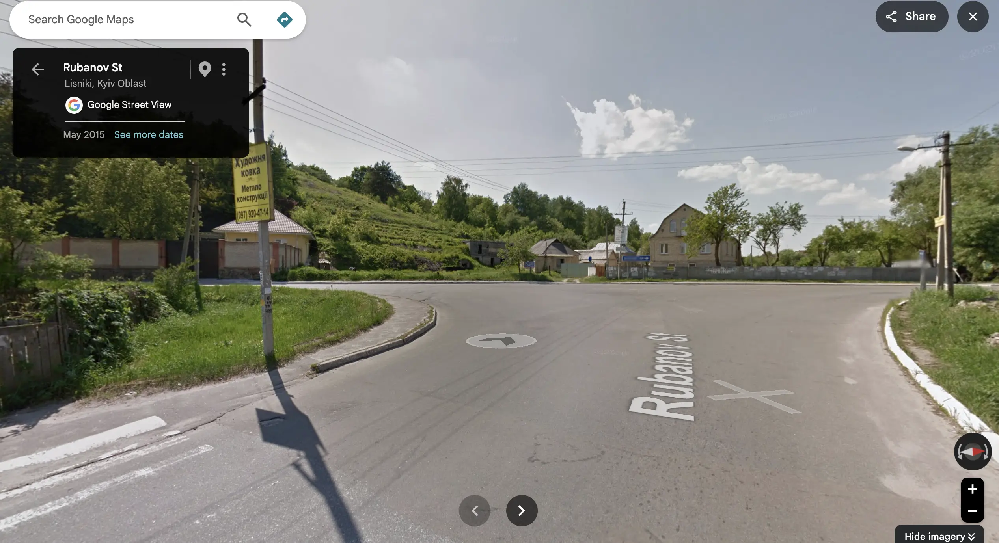
14,4 км: тут ліворуч. - 16,7→Ходосівка, після озера перший поворот праворуч.
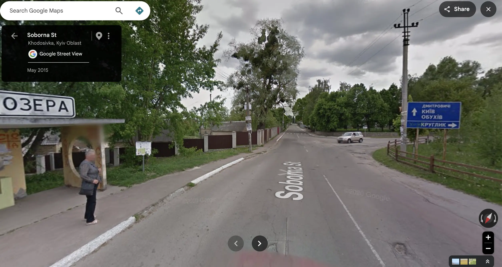
16,7 км: Ходосівка — після озера праворуч. - 16,9→Ходосівка, праворуч на Набережну вулицю. Обережно, виїзд на головну дорогу.
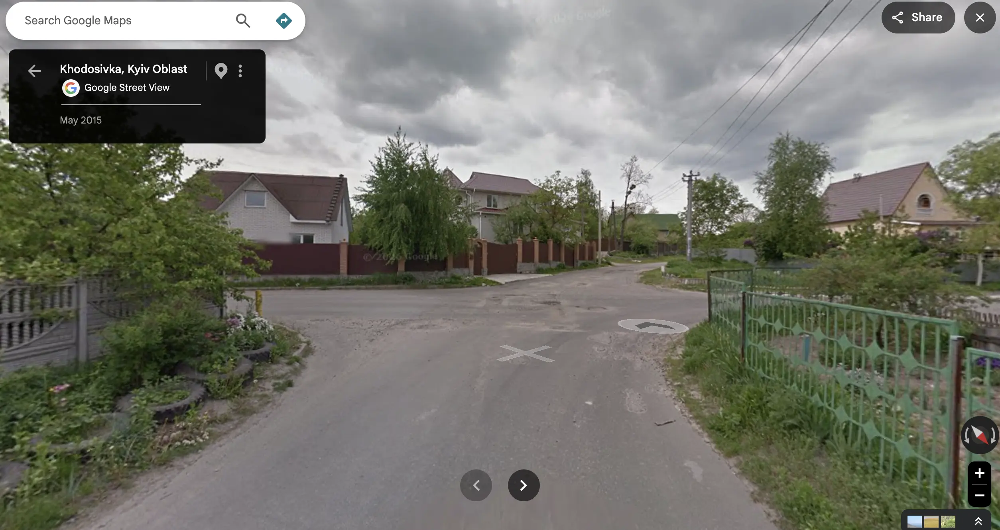
16,9 км: Ходосівка — праворуч на Набережну. - 18,7→Ходосівка, праворуч на вулицю Якуніна в Кременище. Далі короткий тягун Kremenyshche climb (700 м, 2,8%). Рухаємось по головній.
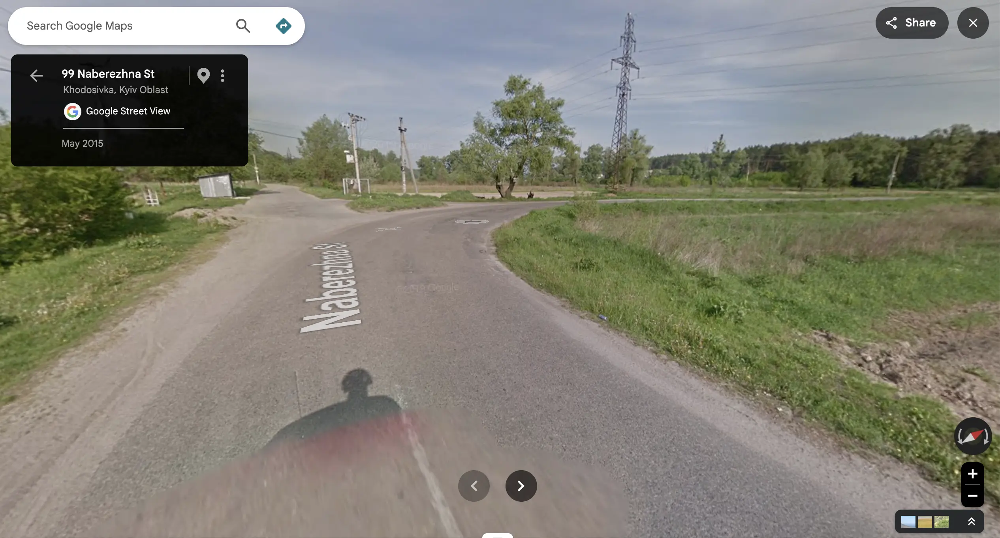
18,7 км: Ходосівка — праворуч на Якуніна. - 22,1←Кременище, ліворуч на Озерну вулицю, до Нижнього озера. Обережно, виїзд на головну дорогу. Вздовж озера найгірша ділянка маршруту з ямами.
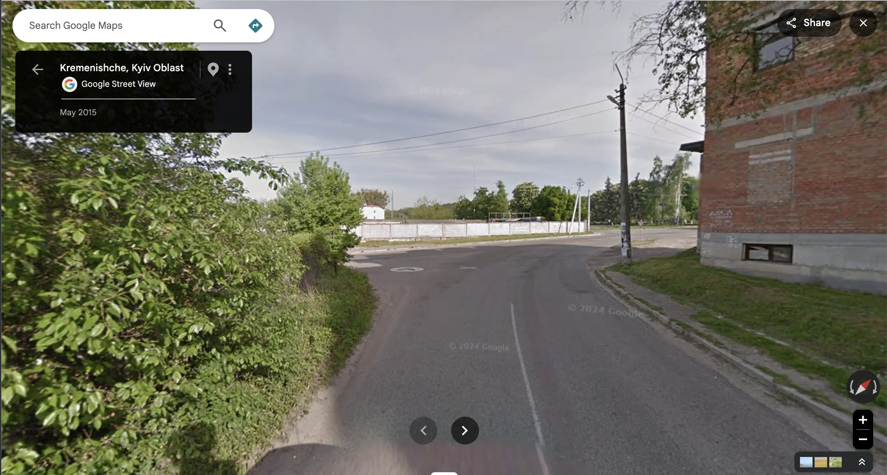
22,1 км: Кременище — ліворуч до озер в Круглику.
22,1–32 км · Круглик, «Космос», Іванковичі, Рославичі
Після озера починається найдовший тягун маршруту, а відразу за ним найшвидший спуск, «Космос». Далі кілька гострих поворотів у Рославичах і вихід на трасу.
- 23,2–25,1↑Після озера тягун Лісом від Круглика (1,9 км, 3,2%).
- 24,2↑Іванковичі прямо.
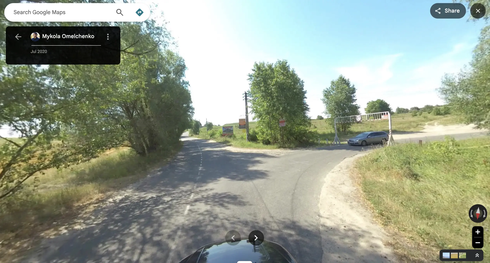
24,2 км: Іванковичі — прямо. - 24,8–25,7↑Спуск Kosmos fall (1,0 км, -5,2%). Руки за низ керма.
24,8–25,7 км: спуск «Космос». - 26,4→Рославичі — після спуску різко праворуч на Долинову вулицю, в підйомчик. Далі по вулиці короткі спуски та підйоми.
- 29,4→Короткий різкий підйом Roslavychi torch (0,28 км, 8,1%).
- 30,0←Рославичі — ліворуч після спуску, на Спасо-Преображенську вулицю. Обережно, обмежена видимість.
- 30,4→За ставком відразу поворот праворуч. Ліворуч буде спортивний майданчик.
- 30,5–31,5↑Тягун по Княжій вулиці Roslavychi out (0,73 км, 5,1%).
31,0–31,6 км: тягун по Княжій вулиці та вихід із села. - 31,9←Ліворуч на трасу Т1006. Обережно, несуться машини.
32–43,9 км · Т1006 → Підгірці → коло (розворот)
5,7 км рівної траси на схід, потім поворот на північ і «пила» до кола. Коло — крайня точка маршруту, звідти повертаємось тією ж дорогою.
- 32–37,6↑Т1006 прямо на схід, майже рівно.
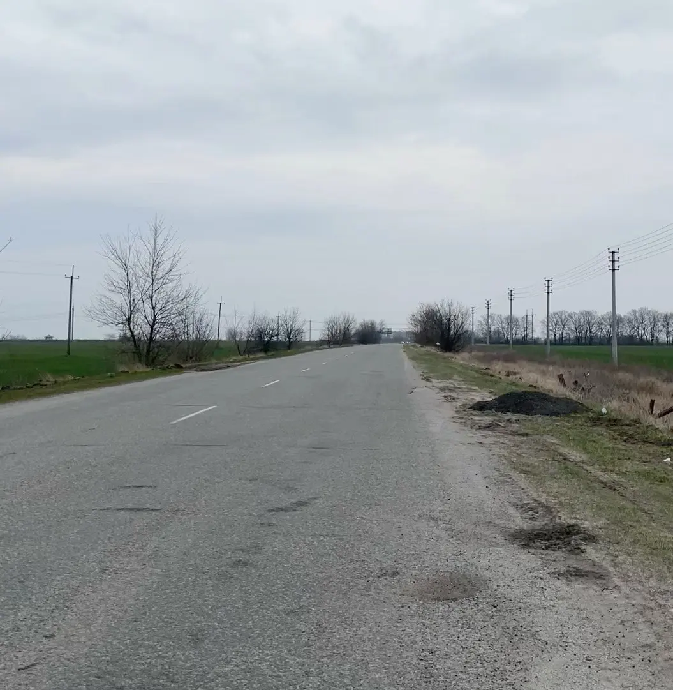
Т1006 прямо на схід. - 37,6←Після заправки відразу ліворуч. Найпомітніший орієнтир на трасі: поворот безпосередньо біля АЗС Parallel. Далі прямо.
- 38,8–40,5↑Спуск уздовж полігону сміттєзвалища. Обережно, їздять габаритні сміттєвози.
- 41,3→На «трикутнику» праворуч. На зворотному шляху проїдете її ще раз, уже ліворуч.
- 41,4–42,3↑Підйом Musorka (0,86 км, 6%).
- 42,3–43,1↑Після підйому відразу спуск до кола Мусорка спуск.
- 43,9↻На колі розворот. Перша колова розв'язка після спуску, крайня східна точка маршруту. Об'їжджаємо і їдемо назад тією ж дорогою.
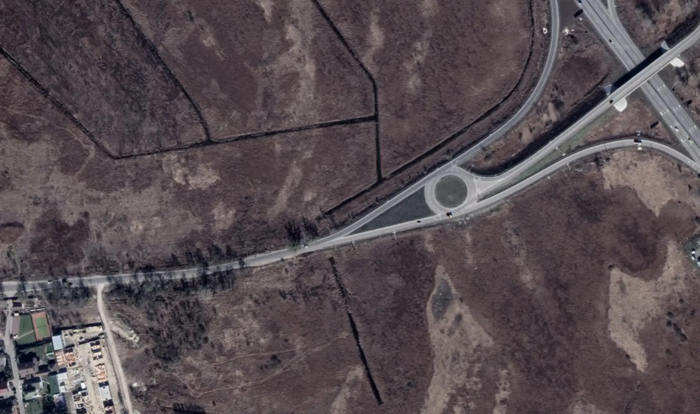
43,9 км: коло — крайня точка, розворот.
43,9–50,4 км · Назад через «трикутник» до Креничів
Дзеркальне повернення: той самий спуск стає підйомом, той самий «трикутник» — поворотом ліворуч. Далі новий відрізок.
- 44,4–46,5↑Підйом від кола та спуск Перевал "Мрія" (1,85 км, 0,9%).
- 47,5→Уважно, на невеличкому трикутнику звертаємо праворуч на Центральну вулицю. Тут легко за інерцією поїхати прямо, звідки приїхали о 41,3 км.
- 48,3→Повертаємо праворуч на Польову вулицю.
- 50,4→Креничі — праворуч на Т1006, виїжджаємо на трасу.
50,4–58,0 км · Т1006 на захід → «Зупинка» → Рославичі
Майже 6 км прямої траси на захід, тим самим асфальтом, яким виїжджали на схід. Проїжджаємо повз поворот на Рославичі й їдемо далі, до автобусної зупинки.
- 50,4–56,2↑Т1006 прямо на захід. Не повертайте на 54,4-му км у Рославичі, яким виїжджали на трасу, нам далі.
- 56,2→Після садового центру «Зелена країна» праворуч. Орієнтир: автобусна зупинка праворуч від траси. На повороті гравій та пісок, відразу за ним 50 метрів з ямами.
- 57,0–58,0↑Швидкісний спуск DownHill crazy drop (0,8 км, -3,7%). Обмежена видимість, не виїжджайте на зустрічку.
Кінець спуску DownHill crazy drop. - 58,0←Після спуску різкий поворот ліворуч. Їдемо тією ж дорогою в підйом. Далі маршрут дзеркально повторює початок.
58,0–73,5 км · Тією ж дорогою назад до Лісників
- 61,5←Різко ліворуч — перший же поворот ліворуч після виходу з Рославичів.
- 62,3–63,3↑Найкрутіший підйом маршруту «Космос», сегмент Kosmos (0,9 км, 6,2%).
- 63,8–65,3↑Спуск до озера Kruglik forest DH (1,76 км, -3,6%).
- 65,7→Кременище — праворуч на Озерну вулицю.
- 71,0←Ходосівка, ліворуч з Набережної. Через 200 м знову ліворуч, дати дорогу головній.
- 73,5←Лісники їдемо прямо і ліворуч, по головній, на вулицю Родини Рубанів. Не виїжджаємо на Дніпровське шосе.
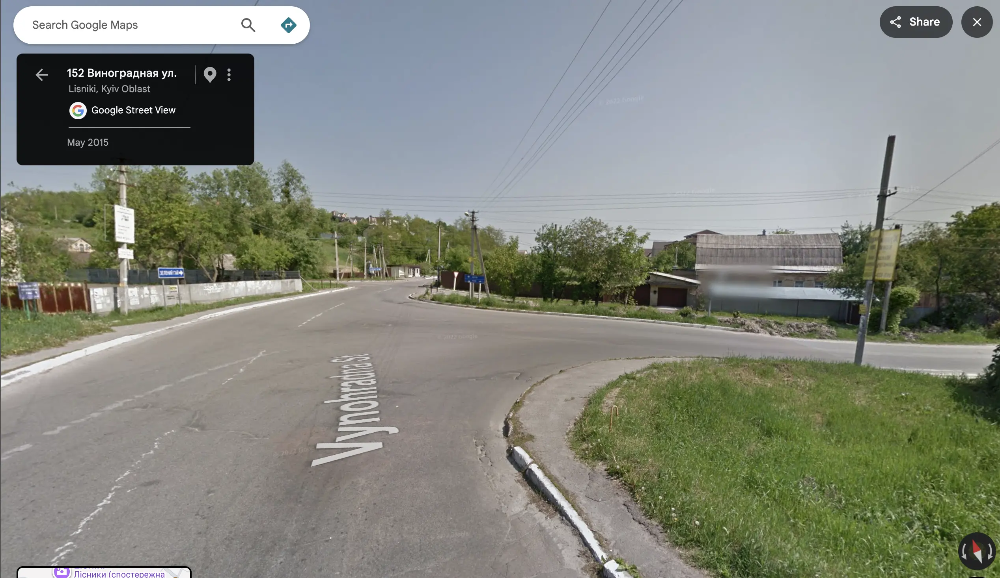
73,5 км: Лісники їдемо прямо і ліворуч по головній.
73,5–83,2 км · Хотів, Городище, Феофанія. Фініш
Тягун із Лісників, швидкий спуск, різкий підйом у Хотові, далі алеї Феофанії. Фініш у підйом, тому сили треба розкладати до нього, а не після.
- 73,7–78,1↑Тягун Lisnyky Long Climb (4,4 км, 1,7%) — вихід із Лісників.
- 78,1–79,0↑Спуск Downhill to Khotiv (0,8 км, -4,6%). Недавно зробили асфальт, можна розганятися.
- 79,0→Хотів — праворуч на вузьку вулицю Івана Франка. Головна буде йти ліворуч, не звертаємо на неї.
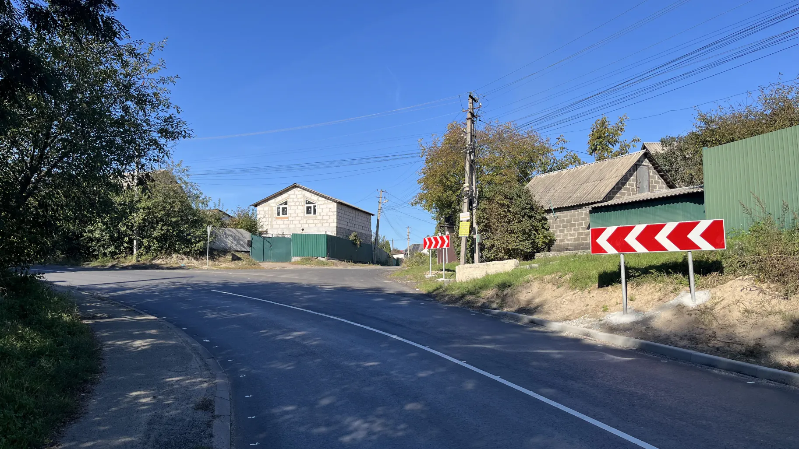
79,0 км: праворуч на вулицю Івана Франка. - 79,2→Далі через 200 м праворуч на Партизанську вулицю. Обережно, обмежена видимість. Також будуть лежачі поліцейські.
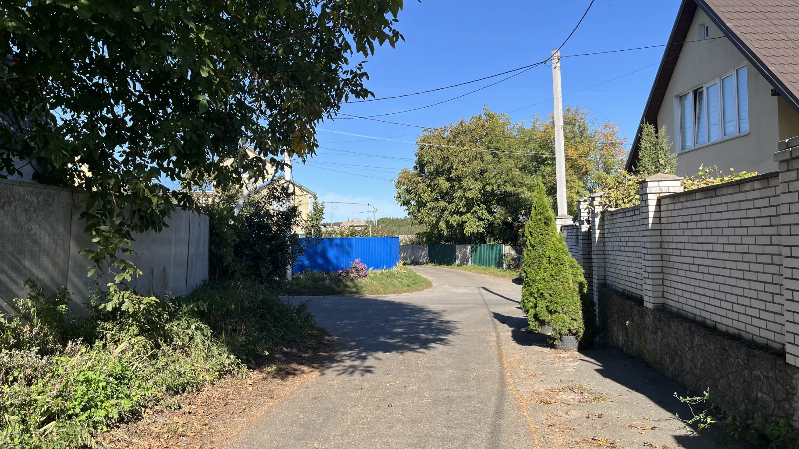
79,2 км: праворуч на Партизанську вулицю. - 79,9↑На перехресті з Пироговською вулицею їдемо прямо на Паркову вулицю до Городища.
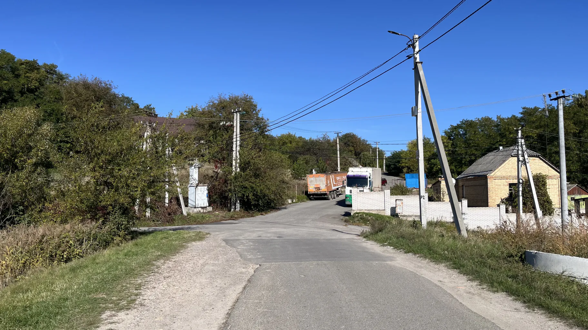
79,9 км: на перехресті з Пироговською вулицею їдемо прямо на Паркову вулицю до Городища. - 80,1↑Невеличкий підйом повз Городище ліворуч.
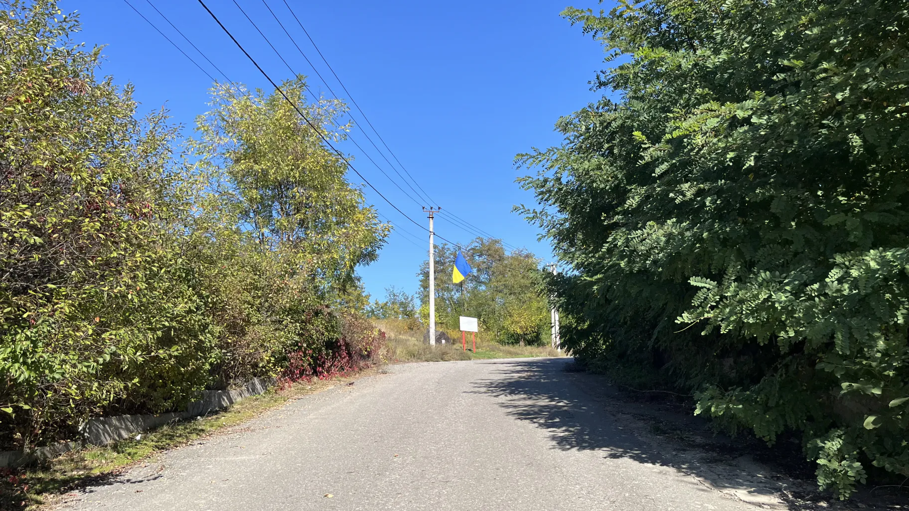
80,1 км: Городище ліворуч. - 80,6–81,2←Ліворуч до підйому маєтку Косюка Zamok feofania up (0,6 км, 6,0%).
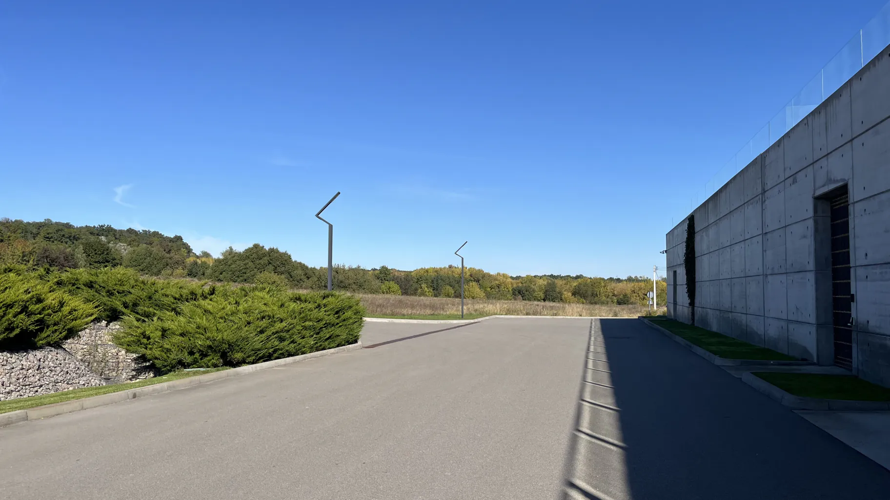
Звертаємо ліворуч до маєтку. - 80,7↑ Проїжджаємо повз шлагбаум, для велосипедистів відкрито.
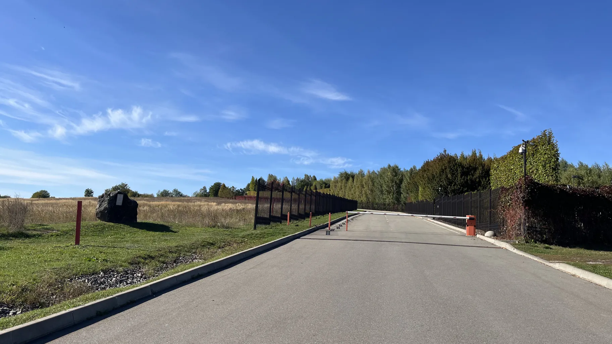
80,7 км: проїжджаємо повз шлагбаум, для велосипедистів відкрито. - 81,1↑Маєток мільярдера.
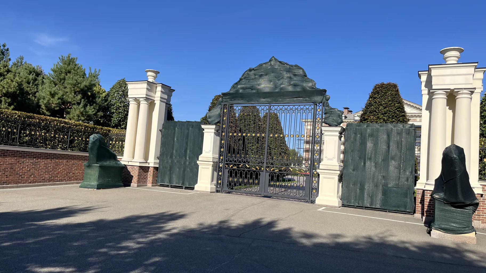
81,1 км: маєток мільярдера. - 81,6↑Їдемо основною алеєю Феофанії.
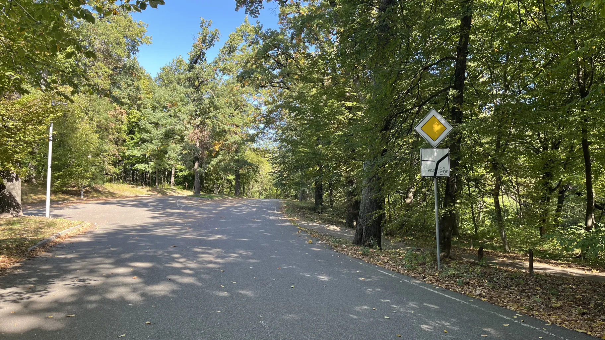
81,6 км: їдемо основною алеєю Феофанії. - 81,8←Починається плитка, нам трішки ліворуч повз дерево по центру дороги.
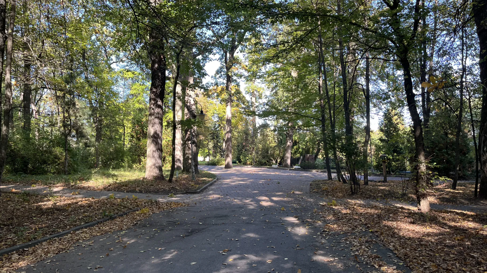
81,8 км: починається плитка. - 81,9↑Плитка переходить у бруківку. Обережно, валяються каштани.
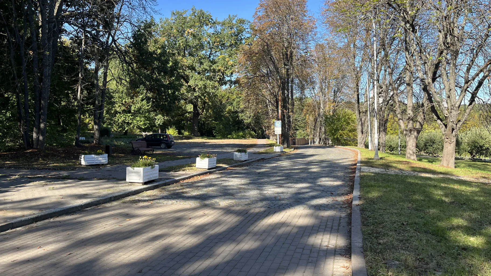
81,9 км: бруківка, обережно. - 82,1→Після бруківки повертаємо праворуч на асфальт.
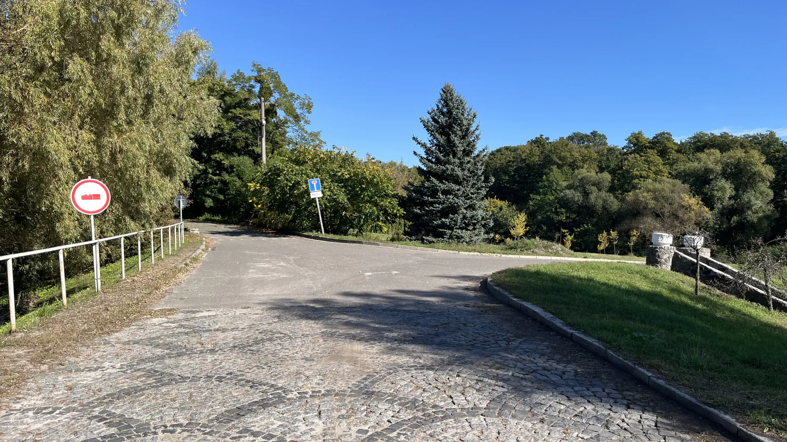
82,1 км: після бруківки повертаємо праворуч на асфальт. - 82,5–83,1↑Підйом майже до фінішу Асфальтний підйом в Феофанії (0,72 км, 5,7%).
- 83,2↑Фініш біля воріт праворуч.
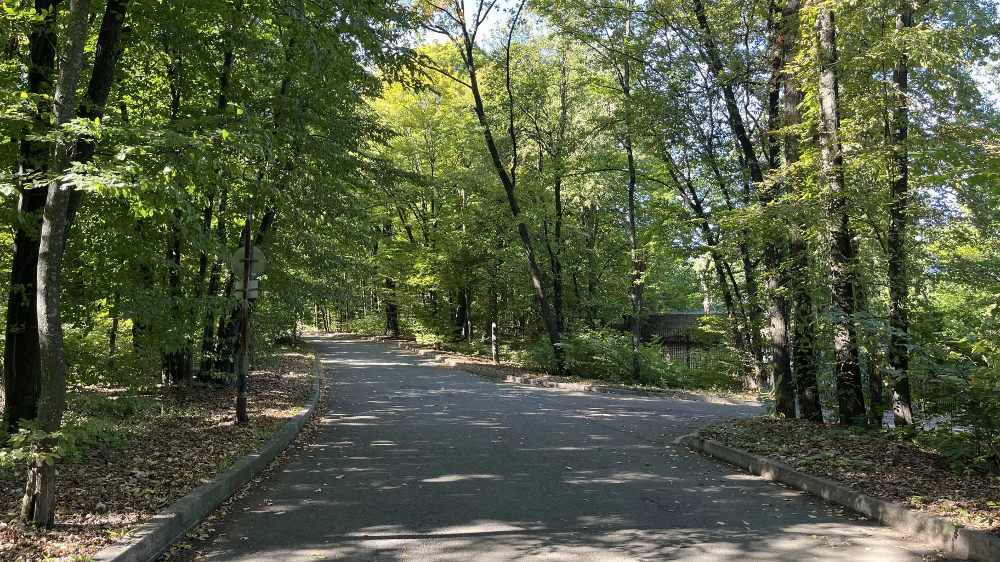
83,2 км: фініш. 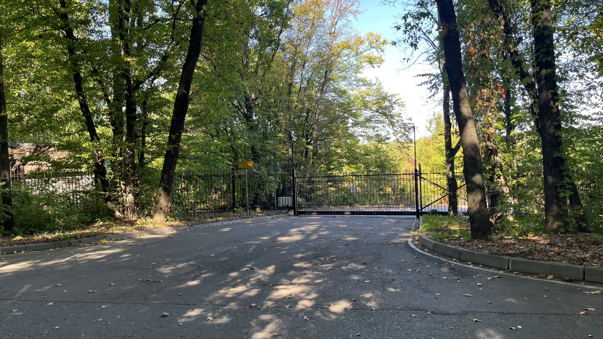
83,2 км: ворота біля фінішу.